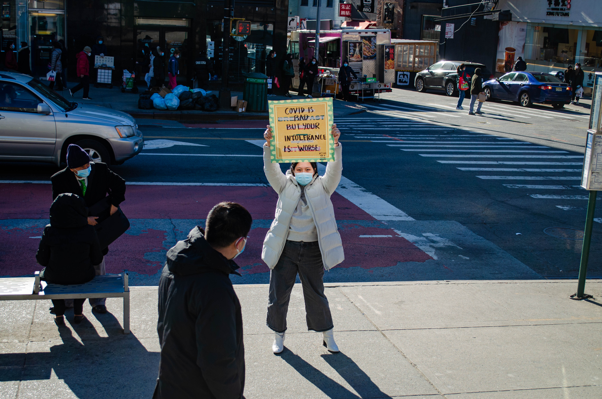
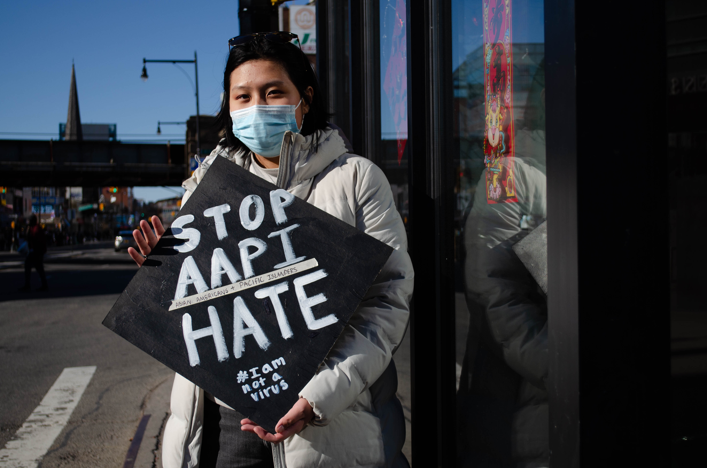
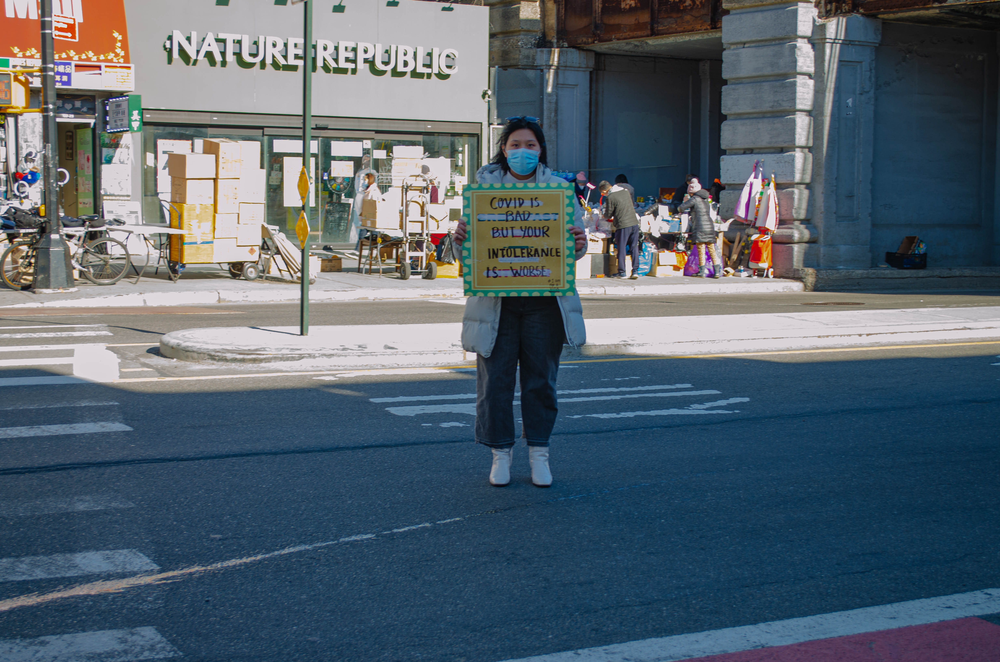
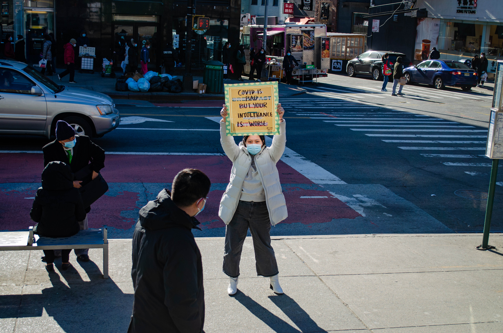
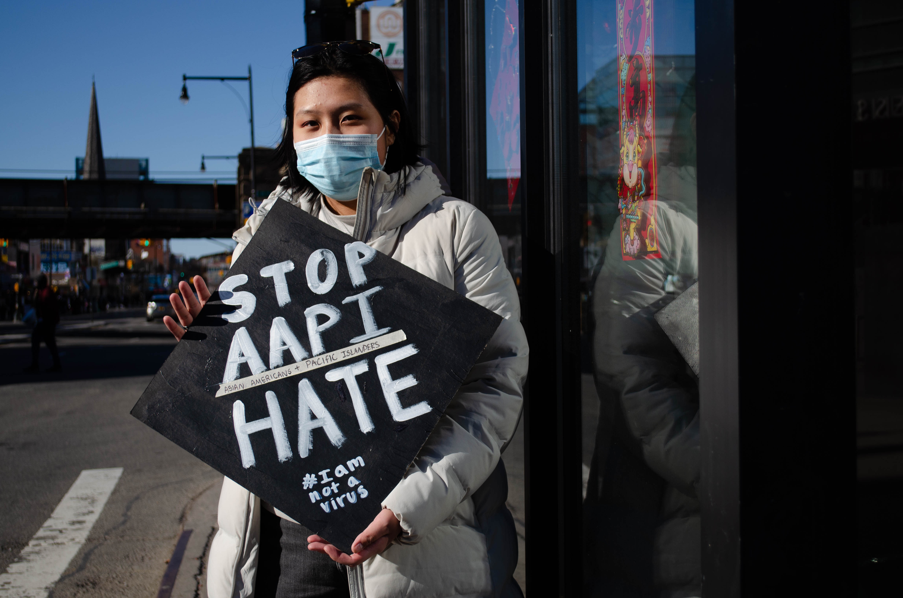
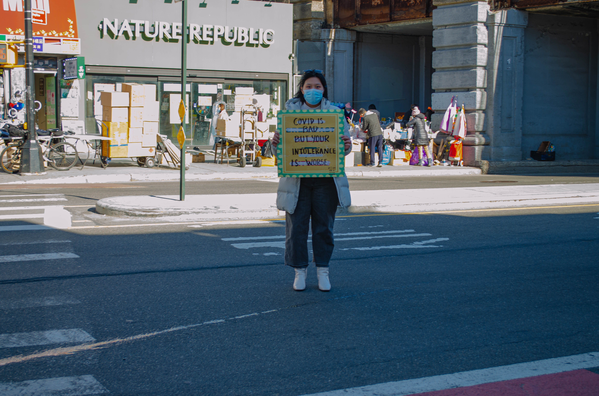

1. Provide Community Resources There needs to be a network of safety as well as a plethora of resources to combat these attacks. 2. Inter-Community Dialogue Additionally, it is important that there is an open dialogue in the community in order to foster a sense of togetherness and unity. 3. Educating Yourself In order to not repeat what has happened in the past, it is imperative that individuals are educated discrimination against the Asian American commuity.
The racism against Asian Americans started with the Chinese Exclusion Act. Many people believed that only white European immigrants should be allowed to come into the country. This was the first law in the United States that halted immigration due to a particular race. Another example of early discrimination against Asians occurred when Filipinos were thought to be “unclean” and “uncivilized”. This mentality resulted in United States colonial rule in their islands. As time passed on, Toronto saw a huge outbreak of Anti-Asian racism. Additionally, following the SARS crisis, there was a rise in racism against Chinese and Filipina health care workers.
Racism against the Asian American community has been a topic of discussion very much prevalent in the news now. Clara Jean Kim, a professor at the University of California, Irvine states that, “From the moment that the first Chinese arrived in the 1850s until today, Asian Americans have been considered not White but also considered not Black”. Historically, there have been numberous times where Asian Americans have been the ones targeted against during times of crisis which is very much seen today during the global pandemic.
Since the pandemic began, there has been a dramatic increase in hate and violence against the Asian American community. This can be attributed to a multitude of factors, most notably the past administration’s coverage and verbiage regarding the origin of the virus. Former President Trump used rhetoric such as “the Chinese Virus” in turn attributing the damage done by the virus to China as a whole. As a result, he essentially has given permission for these attacks and discrimination. Earlier this year, President Joe Biden made attempts to stop this by signed an executive order denouncing anti-Asian discrimination. A majority of these attacks have taken place in the Bay Area.
Here are a collection of resources to become more educated about Asian American Discrimination and to show your support. News Coverage of National Elderly Asian American Assaults End Hate Crimes against Asian Americans Stop AAPI Hate 'Model Minority' Myth Again Used as a Racial Wedge Between Asians and Blacks
 




